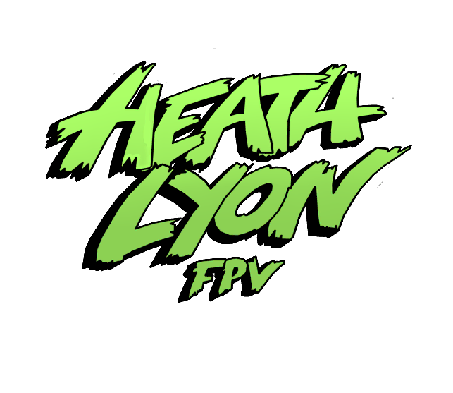

01
Drone Operations
FPV highlights, commercial shoots, aerial cinematography, field planning, and professional flight experience.
Access reel →
FAA Part 107 // FPV CINEMATIC OPERATOR
I build and fly custom FPV systems, develop technical tools, and create interactive digital projects involving drones, computer vision, embedded electronics, and 3D archaeological data.
// 01_PORTFOLIO_MODULES
A growing archive of flight work, engineered builds, software experiments, and digital documentation.
01
FPV highlights, commercial shoots, aerial cinematography, field planning, and professional flight experience.
Access reel →02
Custom FPV drones, cinelifters, Betaflight tuning, soldering, power systems, and troubleshooting.
Inspect builds →03
Python tools, computer vision, YOLO pose tracking, ESP32 sensing, interfaces, and web development.
View systems →// 02_SPATIAL_ARCHIVE
This section is prepared for interactive GLB models, excavation records, classifications, locations, and notes.
3D VIEWPORT READY
Add your Three.js viewer or link this panel to the dedicated scan archive page.
Open Project Archive// 03_ACTIVE_PROJECTS
Systems that combine physical hardware, code, sensing, visualization, and field testing.
RF sensing, mapping, payload integration, and field-ready detection concepts.
YOLO pose tracking, fall detection, gesture input, and live visualizers.
Three.js model viewers and structured archaeological scan collections.